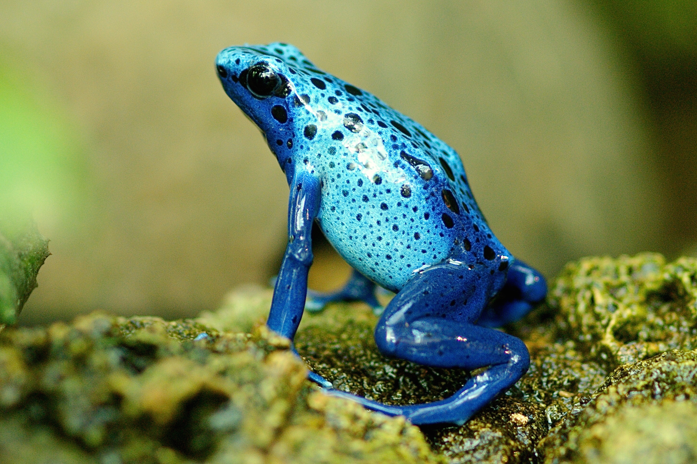
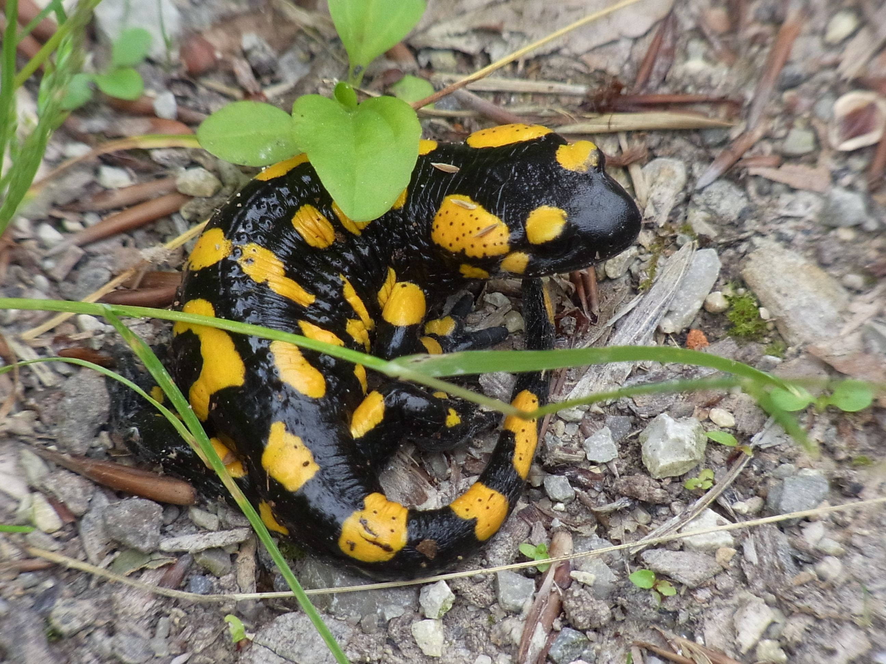
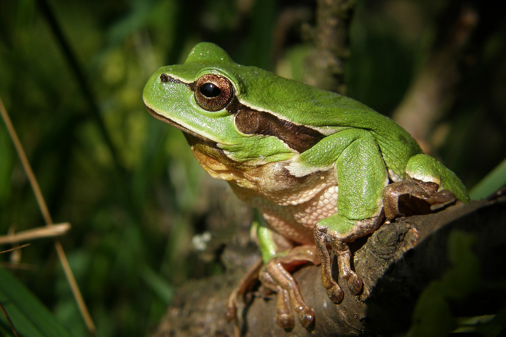
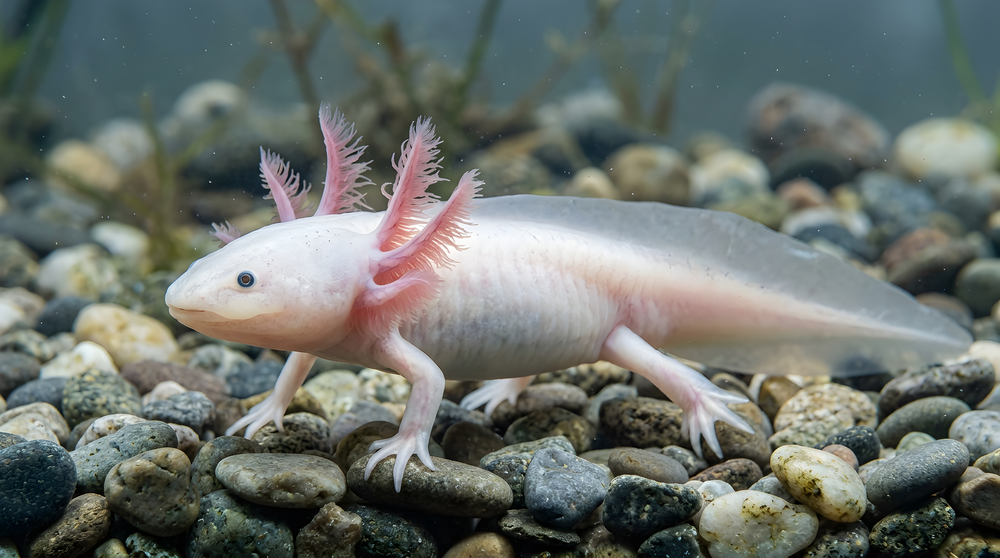
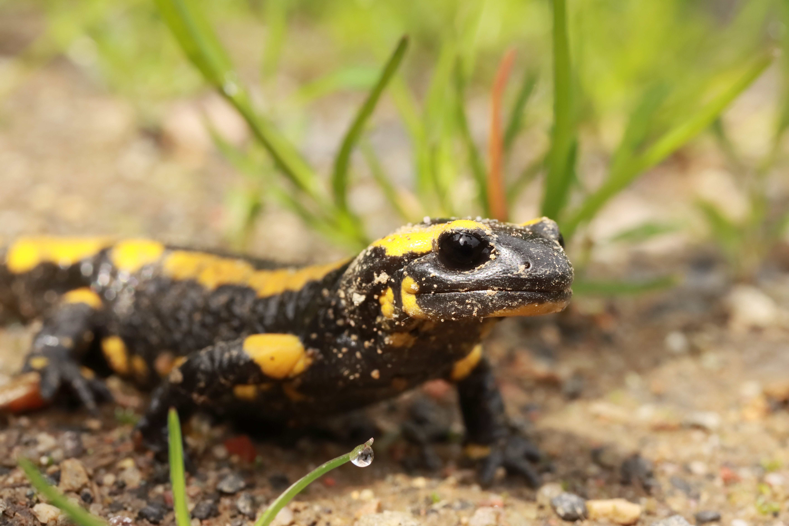
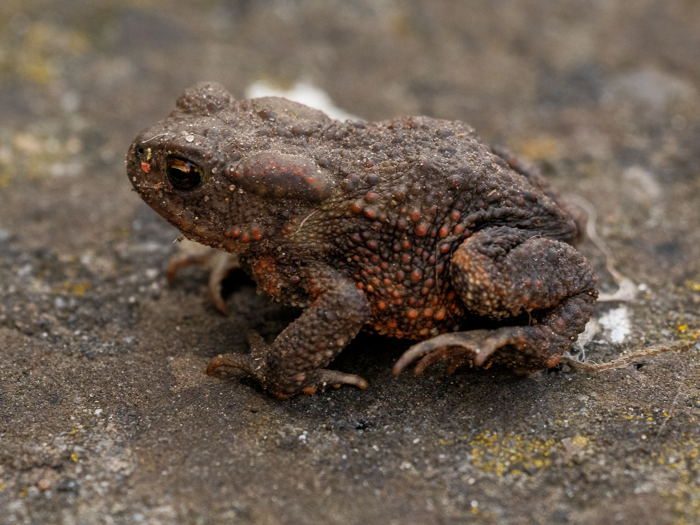
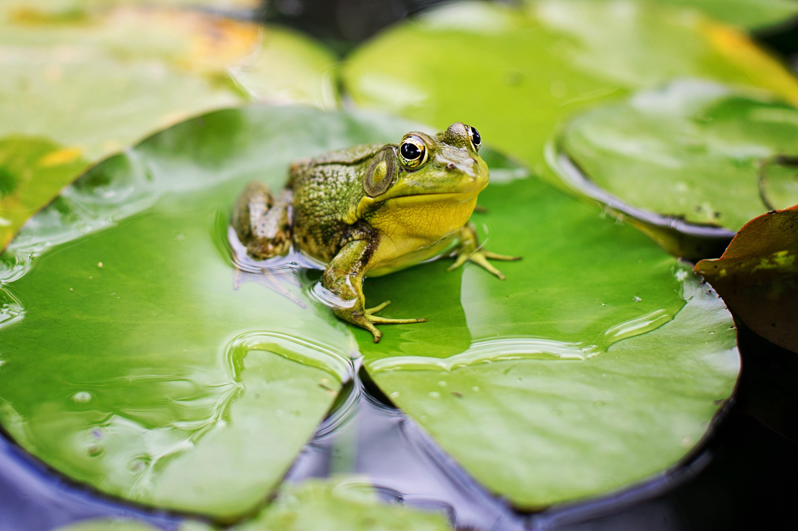

What are Amphibians?
Amphibians belong to the class Amphibia, deriving their name from the Greek word meaning "both lives." They are cold-blooded vertebrates characterized by a unique developmental cycle that typically begins in water with gills and transitions to land with lungs.
Their permeable skin absorbs water and oxygen directly, making them vital biological indicators of environmental health and freshwater purity.
Key Characteristics
1. Metamorphosis: Most amphibians hatch from jelly-like eggs in water as swimming larvae (like tadpoles) before undergoing a dramatic physical transformation into adults.
2. Permeable Skin: Lacking scales, their moist glandular skin allows them to absorb water and breathe directly through it, requiring humid habitats to prevent drying out.
3. Dual Respiration: Depending on the life stage, they breathe using external gills, internal lungs, or directly through their skin membranes.

Meet the Amphibians
While thousands of species comprise this delicate class, here are four fascinating and recognizable representatives.

Red-Eyed Tree Frog
An iconic arboreal amphibian known for its striking bright red eyes and specialized sticky toe pads for climbing.

Axolotl
A unique salamander native to Mexico that retains its larval gills throughout adulthood instead of transforming.

Tiger Salamander
A robust terrestrial amphibian featuring yellow bar patterns, spending most of its life burrowed underground.

American Bullfrog
A large aquatic frog known for its deep, resonant territorial call and powerful jumping capabilities.

Where Do Amphibians Live?
Amphibians are heavily tied to moisture, meaning they thrive primarily in freshwater wetlands, tropical rainforest canopies, and temperate damp woodlands across the globe.
What Do Amphibians Eat?
Dietary habits shift radically between their aquatic larval stages and carnivorous adult phases.
Larval Herbivores
Most tadpoles begin life feeding primarily on algae, aquatic plants, and organic debris, helping naturally clean water bodies.
Adult Carnivores
Mature frogs, toads, and salamanders transition to active hunters, consuming insects, spiders, worms, and small fish.
Specialized Predators
Larger aquatic species use sticky projectile tongues or snap jaws to capture moving prey instantly in dark waters.
💡 Did You Know?
Amphibians can absorb water and breathe entirely through their skin, meaning they never actually need to drink water through their mouths!
The golden poison dart frog carries enough natural toxin on its skin to protect against predators and deter threats in the rainforest.
Certain wood frogs can survive complete winter freeze by turning up to 70% of their body water into natural biological ice.
Quick Facts
8,400+
Recognized amphibian species worldwide
Global Wetlands
Found on every continent except Antarctica
Skin & Lungs
Dual cutaneous and pulmonary breathing